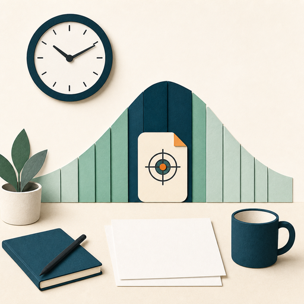
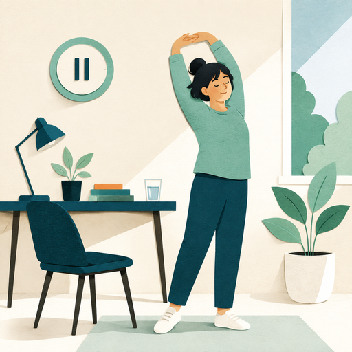

Peak performance
Schedule demanding work when your attention and problem-solving are strongest.
Your productivity rhythm describes how, when, and where you are most productive.

Schedule demanding work when your attention and problem-solving are strongest.
Reserve routine or less complex work for periods when focus is naturally lower.
Key point
Your pattern is individual. The goal is to notice it and use it intentionally.
Energy levels fluctuate throughout the workday and influence concentration, clarity, and problem-solving.
What may influence energy and focus?
Balance does not mean dividing time equally. It means making intentional choices about what matters in the time available.
Select a helpful strategy
Regular breaks can increase concentration, protect mental energy, and reduce the risk of burnout.

Which action will help you protect your productivity rhythm?
Select one